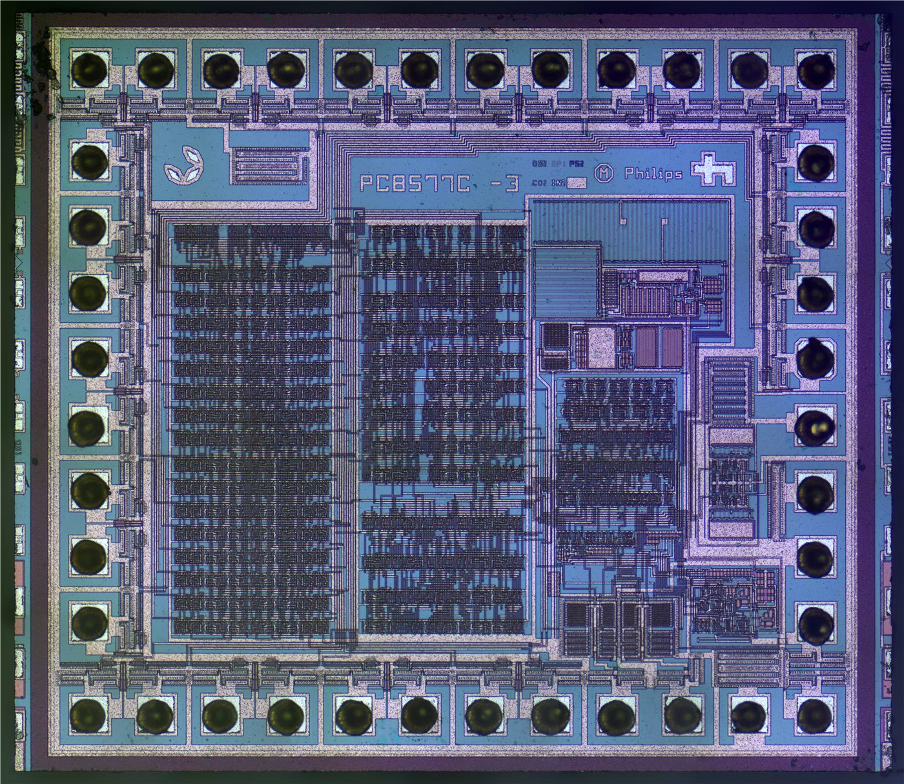

日 '9대 기업', 中·韓 배터리에 맞서 연합 추진
일본의 주요 배터리·소재 기업들이 중국·한국 업체에 맞서기 위해 연합을 모색하고 있다는 분석이 나왔다.
전홍발 기자 · 2026.06.23
橋경제

일본의 이른바 '9대 기업'이 중국·한국 배터리 업체와의 경쟁에서 살아남기 위해 협력 연합을 추진하고 있다고 환구망이 23일 전했다. 글로벌 배터리 시장의 경쟁 구도가 한층 치열해지는 양상이다.
광고 문의 · 300×250전기차 보급과 에너지 저장 수요가 늘면서 배터리는 핵심 전략 산업으로 떠올랐다. 중국과 한국 기업이 시장을 주도하는 가운데, 일본은 기술력 결집으로 추격을 노린다.
기업 간 연합은 연구개발 비용 분담과 공급망 안정, 규모의 경제 확보를 목적으로 한다. 단독 경쟁보다 협력을 통해 경쟁력을 끌어올리려는 전략이다.
배터리 산업의 경쟁은 차세대 소재와 생산 효율, 원자재 확보에서 갈린다. 각국 기업의 합종연횡이 시장 판도에 변화를 줄 수 있다.
華橋時報는 산업 경쟁을 특정국의 우열로 단정하지 않고, 글로벌 분업과 협력의 흐름 속에서 균형 있게 전한다.
출처·참고 (사실 확인용 — 본문은 직접 재작성)
· 環球網
· 環球網